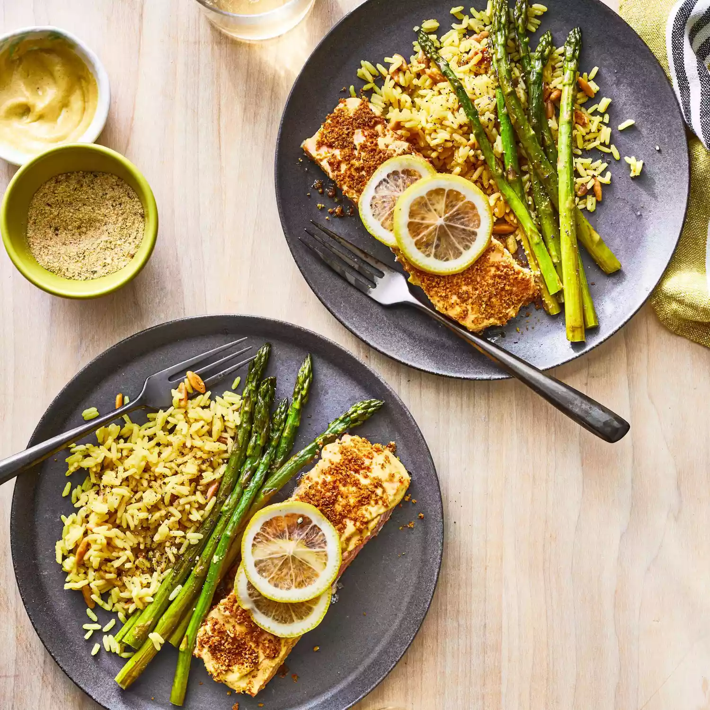

Baked Salmon Fillets Dijon

Description
I'm sure this would taste good if I ever made it!
Ingredients
- 4 (4 ounce) fillets salmon
- 3 tablespoons prepared Dijon-style mustard
- salt and ground black pepper to taste
- ¼ cup Italian-style dry bread crumbs
- ¼ cup butter, melted
Steps
- Preheat the oven to 400 degrees F (200 degrees C). Line a shallow baking pan with aluminum foil.
- Place salmon fillets skin-side down on the prepared baking pan. Spread a thin layer of mustard on top
of each fillet; season with salt and pepper. Top with bread crumbs, then drizzle with melted butter.
- Bake in the preheated oven until salmon flakes easily with a fork, about 15 minutes.
Recipe source: Allrecipes.com